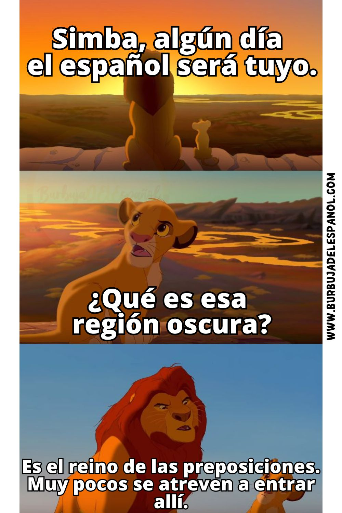

Preposición
• Definición propia: Son conectores muy cortos que sirven para unir palabras e indicar la relación que hay entre ellas, como la dirección, el lugar o el origen.
• Banco de palabras: En, de, para, por, con.
• Oración de aplicación: Dejamos todos los archivos importantes guardados en la nube.
